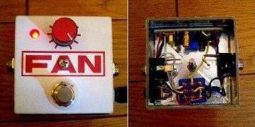
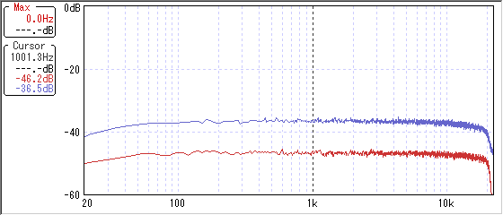

ひよこのページ ミニブースター
2007年09月27日 カテゴリー：自作エフェクター（アナログ）

ひよこのページのミニブースターです。とても簡単なのですがクリーンブースターとしては充分だと思います。GAINポットは10kΩのBカーブに交換したほうがよさそうです（または50kΩのCカーブ？）。
箱は100円均一のプラスチックのヤツなので若干弱いかもしれません。さすがにこの小ささでは電池は入りませんでした。真ん中でネジ止めしてるのでLEDが変な位置です。
追記：GAINポットを10kBに変更
ゲイン最小でも少しだけ音量が上がってしまうけどまぁ問題ないです。10kΩのCカーブがいいかもしれません。
再追記：分解してPOTIONに生まれ変わりました。
▽回路図
ひよこのぺーじ→ミニブースター
▽周波数特性

赤がバイパス、青がゲインをフルにした状態です。+10dBってとこです。もうちょっとゲインが欲しい気もします。